R8-A1 — Articulated arms / compact rifle hold AWAITING HUMAN REVIEW. A original / B previous rigid-arm study / C RigV2 hold / D subtle focus. Two rigid FK segments per arm; no hand bones or rig constraints.
Full artistic report · Preservation and contact measurements
48 frames / 24 fps / 2 seconds. Focus 15, emphasis 20, settled 43.
Closer aim-bias playback 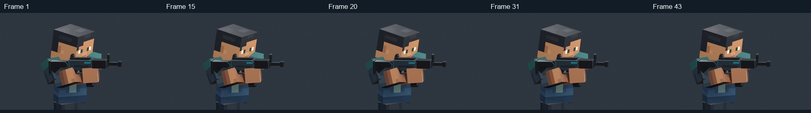
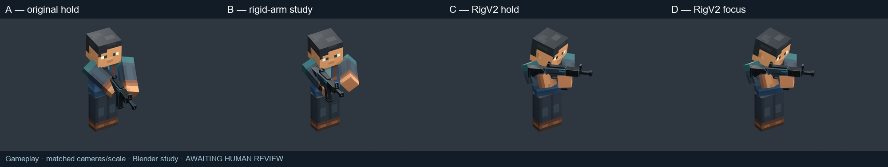
Gameplay — matched A/B/C/D. GameplayOpposite retains the previous R7-W1 elevated camera angle. 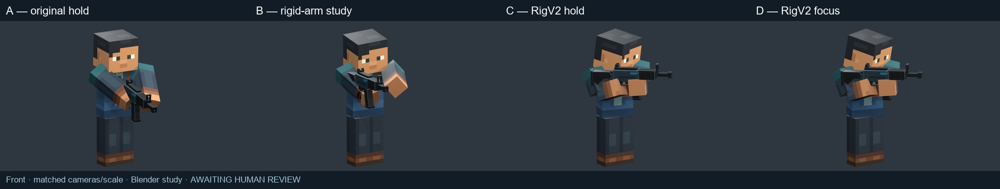
Front — matched A/B/C/D. GameplayOpposite retains the previous R7-W1 elevated camera angle. 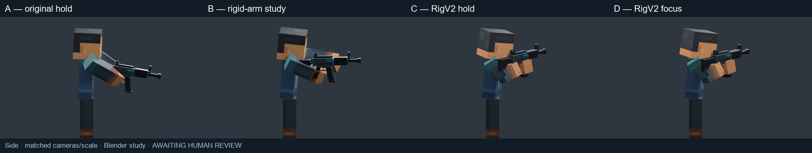
Side — matched A/B/C/D. GameplayOpposite retains the previous R7-W1 elevated camera angle. 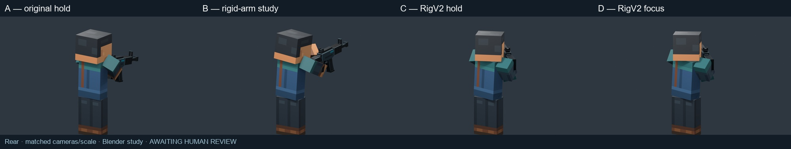
Rear — matched A/B/C/D. GameplayOpposite retains the previous R7-W1 elevated camera angle. 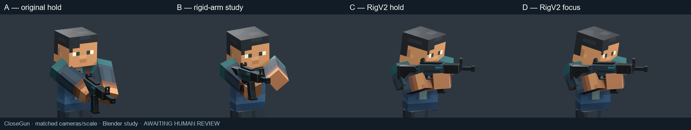
CloseGun — matched A/B/C/D. GameplayOpposite retains the previous R7-W1 elevated camera angle. 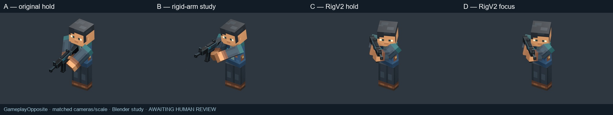
GameplayOpposite — matched A/B/C/D. GameplayOpposite retains the previous R7-W1 elevated camera angle. Gameplay distance, native pixels 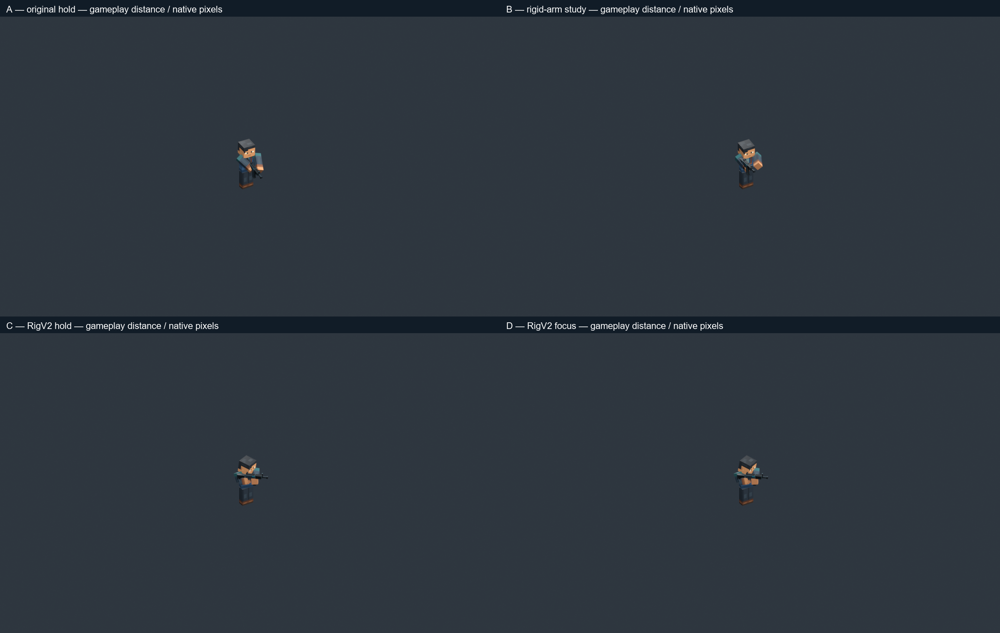
User references 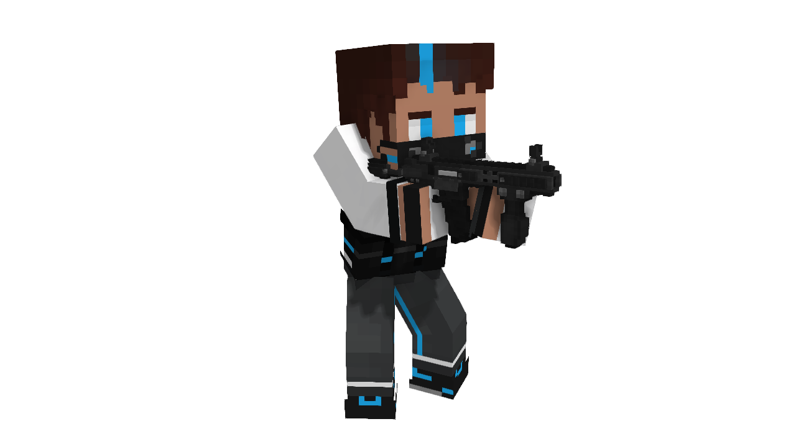
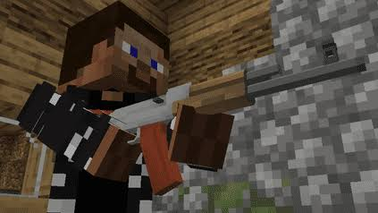
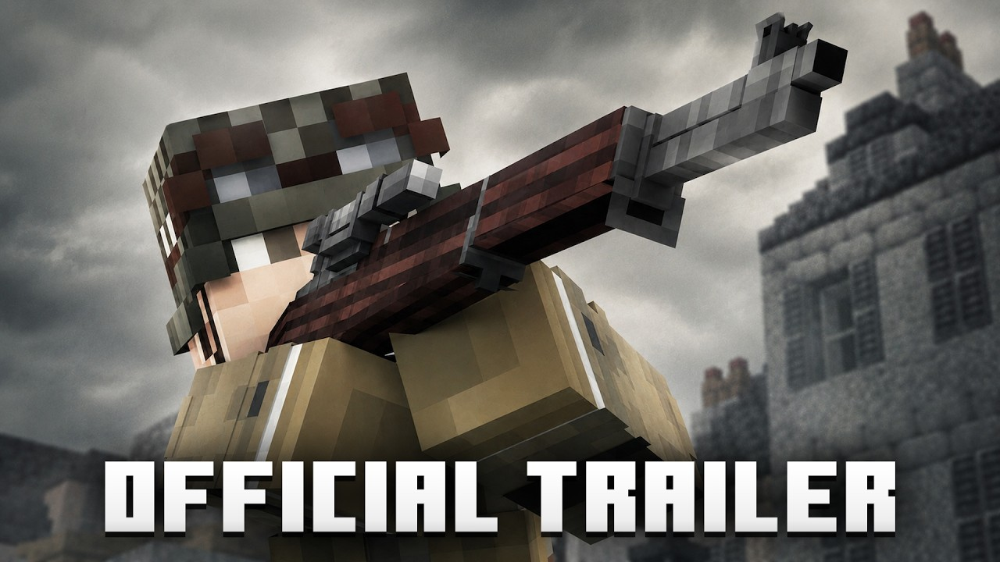
Original supplied images. No reference pixels or character renders were AI regenerated. Perspective does not establish the source rigs or motion.